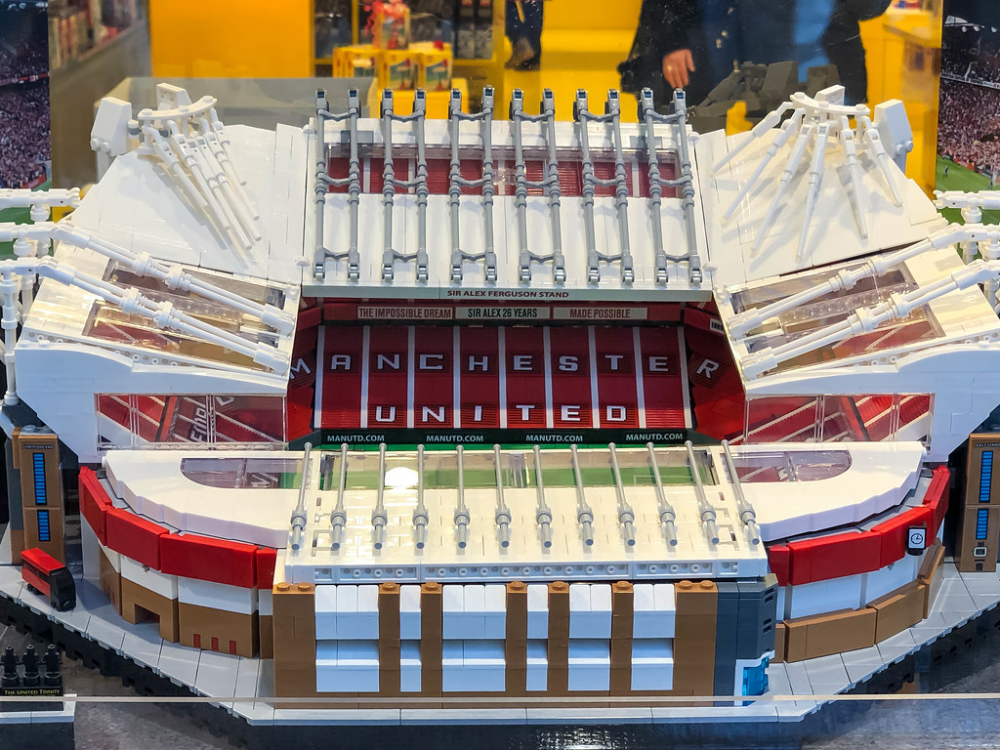

Old Trafford
Old Trafford is a football stadium in Old Trafford, Greater Manchester, England, and the home of Manchester United. With a capacity of 74,140 seats, it is the largest club football stadium (and second-largest football stadium overall after Wembley Stadium) in the United Kingdom, and the eleventh-largest in Europe. It is about 0.5 miles (800 m) from Old Trafford Cricket Ground and the adjacent tram stop. Nicknamed "The Theatre of Dreams" by Bobby Charlton, Old Trafford has been United's home ground since 1910, although from 1941 to 1949 the club shared Maine Road with local rivals Manchester City as a result of Second World War bomb damage. Old Trafford underwent several expansions in the 1990s and 2000s, including the addition of extra tiers to the North, West and East Stands, almost returning the stadium to its original capacity of 80,000. Future expansion is likely to involve the addition of a second tier to the South Stand, which would raise the capacity to around 88,000. The stadium's record attendance was recorded in 1939, when 76,962 spectators watched the FA Cup semi-final between Wolverhampton Wanderers and Grimsby Town.
